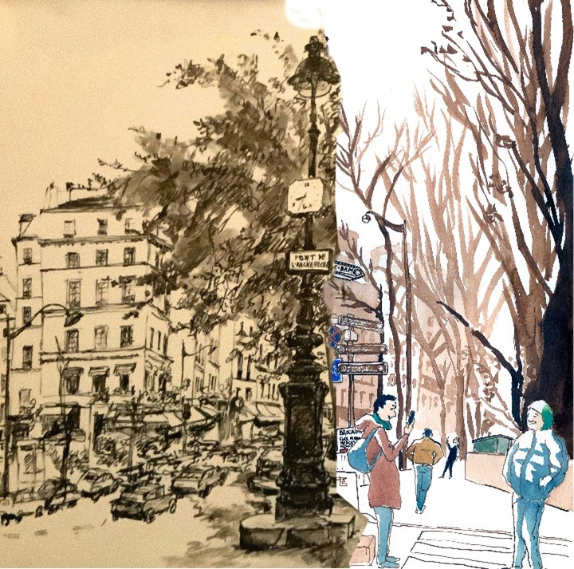

Exposition Virtuelle Paris

C’est l’histoire de rencontres.
Une rencontre entre Païta et l’art, le dessin.
Une rencontre entre Païta, et une association, le Secours Catholique.
Une rencontre entre le Secours Catholique et des Urban sketchers®.
Une rencontre entre Païta et des Urban sketchers®.
Païta est une artiste, précurseur, dans les années 1950, du croquis urbain. Elle a dessiné Paris pendant des
décennies.
Nous vous proposons d’aller à la rencontre de Païta, à travers ses œuvres et les œuvres des Urban sketchers®, qui
ont réinterprété certaines de ses œuvres.
Grâce à la carte, découvrez le Paris de Païta réinterprété par 7 talentueux urban sketchers®
Le Secours Catholique a décidé d’organiser cette exposition pour soutenir le patrimoine artistique de Païta, qui a
très généreusement décidé de léguer son patrimoine à notre association, le moment venu.
Un grand merci à elle pour son soutien !
Bonne visite à vous !
L'équipe du Secours Catholique
Contact Secours Catholique :
Norah BILET
01 45 49 75 35
norah.bilet@secours-catholique.org